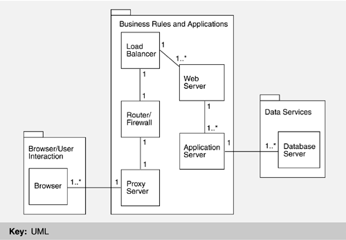

| [ Team LiB ] |
|
13.4 Another Cycle through the ABC: The Evolution of Web-Based E-Commerce ArchitecturesThe incredible success of the Web has resulted in unprecedented interest from business and hence unprecedented pressure on the architecture, via the ABC. Business requirements have begun to dominate Web architecture. Business-to-business and business-to-consumer Web sites have fueled most of the innovation in Web-based software. The original conception of the Web was as a web of documents, in keeping with its hypertext roots. E-commerce, however, views the Web as a web of data, and these different views have led to some tensions. For example, "pushing" data to a user is difficult; the most common technique for updating data is to reload it at specified periods rather than to rely on the change of data to force a screen update. Another is the back button on a browser, which in certain circumstances may result in stale data being displayed on a screen. The new requirements of e-commerce are stringent and quite different from the original requirements presented in Section 13.2:
The architectural solution to these requirements is more about system architecture than simply software architecture. The components that populate the system come from the commercial marketplace: Web servers and Web clients of course, but also databases, security servers, application servers, proxy servers, transaction servers, and so forth. A typical reference architecture for a modern e-commerce system is shown in Figure 13.6. The browser/user interaction function is usually fulfilled by a Web browser (but it could be a kiosk, a legacy system with a Web connection, or some other Web-enabled device). The business rules and applications function is typically fulfilled by application servers and transaction servers. The data services layer is typically fulfilled by a modern database, although connections to legacy systems and legacy databases are also quite common. This scheme is often referred to as an n-tier architecture (here, n = 3). A tier is a partitioning of functionality that may be allocated to a separate physical machine. Figure 13.6. An e-commerce reference architecture
A typical implementation of an e-commerce system architecture consists of a number of tiers, each consisting of a coherent grouping of software (typically customized commercial components) and hardware. Such a configuration is given in Figure 13.7, which shows how software is allocated to hardware. Figure 13.7. A typical e-commerce system The figure is annotated with the functional elements from Figure 13.6 to reinforce the notion that a single function in the reference architecture may map to multiple tiers in a typical e-commerce architecture. The two parts of Figure 13.5 occur here as elementary components: the Web browsers (clients) and the Web servers, respectively, reflecting the evolution toward component-based systems in which the internal component structure is less relevant. We will now discuss each of the elements in Figure 13.7, along with the qualities that each helps to achieve. WEB BROWSERS FOR MODIFIABILITYAn end user typically initiates a request for information by interacting with a Web browser. Modern Web browsers support user interface modifiability in a wide variety of ways, the most obvious of which has not changed from the inception of the Web: The user interface that the browser supports is not hardwired but it is specified via HTML. At least, it used to be. Nowadays there are many other technologies for creating sophisticated user interfaces. XML, Flash, ActiveX, and Java applets are just a few of the methods by which the standard palette of Web interactors (graphics and hot spots) are widened to provide fully programmable interactive interfaces via browsers. HTTPS FOR SECURITYOnce the user has submitted a request, it must be transmitted to a target Web site. This transmission may be via HTTP or, for sensitive information such as credit card or identification numbers, HTTPS (HTTP Secure). HTTPS uses Netscape's Secure Sockets Layer as a subprotocol underneath HTTP. It uses a different port (443 instead of the standard port 80 that HTTP uses) to request TCP/IP services in an encrypted form. SSL uses a 128-bit public/private key pair to encrypt the data, and this level of encryption is considered adequate for the exchange of small amounts of commercial information in short transactions. PROXY SERVERS FOR PERFORMANCERequests from individual browsers may first arrive at a proxy server, which exists to improve the performance of the Web-based system. These servers cache frequently accessed Web pages so that users may retrieve them without having to access the Web site. (Caches carry out the tactic of "multiple copies.") They are typically located close to the users, often on the same network, so they save a tremendous amount of both communication and computation resources. Proxy servers are also used by companies that want to restrict their employees' access to certain Web sites. In this case the proxy server is acting somewhat like a firewall. ROUTERS AND FIREWALLS FOR SECURITYRequests from the browser (or proxy server) then arrive at a router, located on the e-commerce provider's network, that may include a firewall for security. (Alternately the router may pass HTTP requests on to a separate firewall.) The router may implement network address translation (NAT), which translates an externally visible IP address into an internal IP address. The IP address for any return traffic from the Web server is translated so that it appears to have originated from the externally visible site, not from the internal IP address. NAT is one of the techniques used in load balancing, as we will discuss shortly. The purpose of the firewall is to prevent unauthorized information flows or accesses from the outside world, an example of the "limit access" tactic. There are several types of firewall, the most common being packet filters and application proxies. Packet filters examine the TCP and IP headers of each incoming packet and, if any bad behavior is detected (such as an attempt to connect via an unauthorized port or to send nonconforming file types), the packet is rejected. Packet filter firewalls are appropriate for Web-based communication because they examine each packet in isolation—there is no attempt to maintain a history of previous communication. Application proxy firewalls are, as their name suggests, application specific. They typically understand application protocols and hence can filter traffic based on known patterns of behavior. An application proxy may, for example, refuse an HTTP response unless an HTTP request was recently sent to that site. These firewalls can be much slower than packet filter firewalls because they rely on keeping a certain amount of history information on hand and their processing tends to be more complex. LOAD BALANCING FOR PERFORMANCE, SCALABILITY, AND AVAILABILITYA load-balancing component is an integral part of any important e-commerce Web site, because it supports performance, scalability, and availability. The job of the load balancer is to distribute the "load"—incoming HTTP and HTTPS requests—among a pool of computers running Web servers. (Recall from Chapter 5 that load balancing follows from the tactic of "introducing physical concurrency.") The load balancer may simply (and transparently) redirect the request to another computer, or it may respond to the Web client and instruct it to redirect the request to a different server. While this redirection is transparent to the end user, it results in an additional roundtrip of communication. In choosing which computer to redirect the traffic to, the load balancer may select in a round-robin fashion, or its choices may be based on known processing or load characteristics of each computer to which it is connected. Because the load balancer is acting as a proxy for the pool of computers, we can add to that pool without changing any external interface. In this way the load balancer supports performance scalability, known as horizontal scaling (adding more instances of a given resource). In addition, the load balancer may monitor the liveness of each of its computers and, if one of them goes down, simply redirect traffic to the others in the pool. In this way it supports availability. WEB SERVERS FOR PERFORMANCENext the HTTP or HTTPS request reaches the Web server. Early Web servers, such as those described in Figure 13.5, were typically single threaded. Modern versions are multithreaded, utilizing a pool of threads, each of which can be dispatched to handle an incoming request. A multithreaded server is less susceptible to bottlenecks (and hence long latency) when a number of long-running HTTP or HTTPS requests (such as credit card validations) arrive because other threads in the pool are still available to serve incoming requests. This is the performance tactic of "introduce concurrency." Vertical scaling (adding more powerful instances of a given resource) can be accomplished by replacing existing servers with more powerful machines that will run more threads simultaneously. Upon analyzing the request, the Web server will send it to an application server that can respond, typically using the services of a database to do so. Chapter 16 will discuss Enterprise JavaBeans, a modern implementation approach for Web servers. APPLICATION SERVERS FOR MODIFIABILITY, PERFORMANCE, AND SCALABILITYFrom the Web server the request is forwarded to an application server. "Application server" is a broad (some would say ill-defined) term for a class of applications that run in the "middle" of the n-tier architecture—business rules and applications. These servers implement business logic and connectivity, which dictate how clients and servers interact. The trend toward application servers has allowed significant portions of functionality to be moved from old-style "fat" clients into the middle tier. Also, they have allowed databases to concentrate on the storage, retrieval, and analysis of data without worrying about precisely how that data will be used. Application servers at the low end typically offer an integrated development environment (IDE) and runtime server. IDEs support a programming model, such as COM (or, more recently, .NET), CORBA, or J2EE (discussed in Chapter 16). Many application servers also support a set of commonly used services for quickly creating business and e-commerce applications, such as billing, inventory, work flow, and customer relations management. At the upper end in terms of cost, complexity, and functionality are transaction processing and transaction monitoring. Transaction monitors and processors interact with databases and manage tasks like distributed transactions (including combining data from multiple sources), queuing, transaction integrity, and workload balancing (much like the load balancer mentioned earlier). DATABASES FOR PERFORMANCE, SCALABILITY, AND AVAILABILITYFinally, the request for service arrives at the database, where it is converted into an instruction to add, modify, or retrieve information. Modern database architectures share many of the qualities of the entire e-commerce system presented in Figure 13.7. They frequently use internal replication for performance, scalability, and high availability. They may use caching for faster performance. |
| [ Team LiB ] |
|